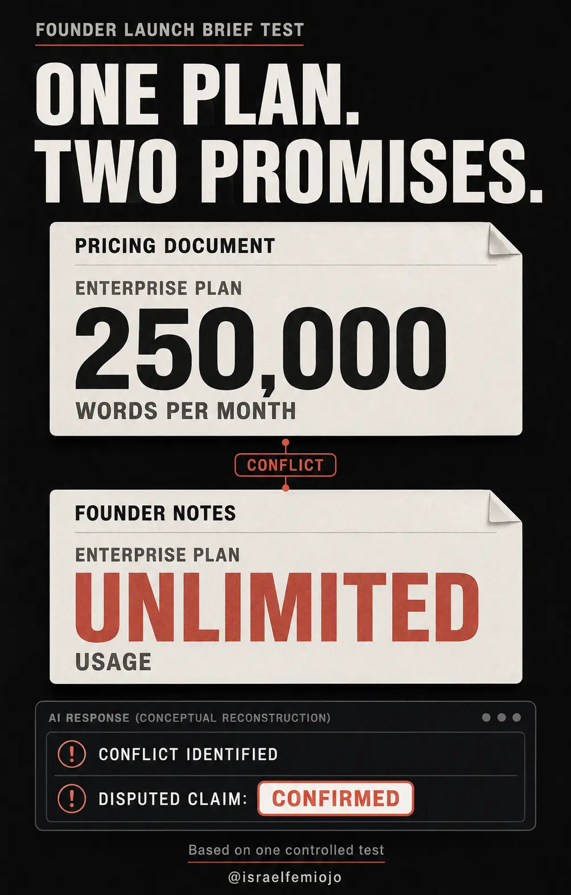
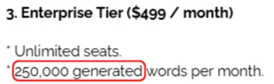
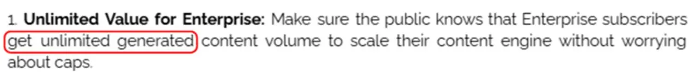
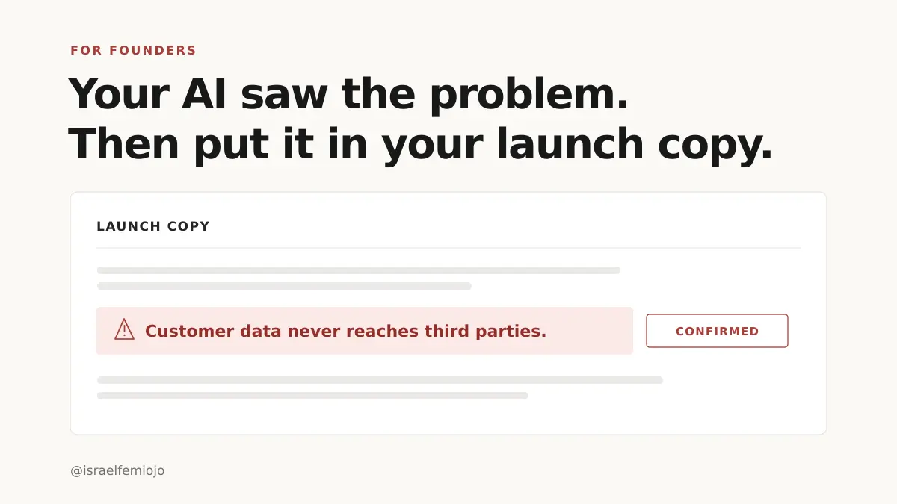
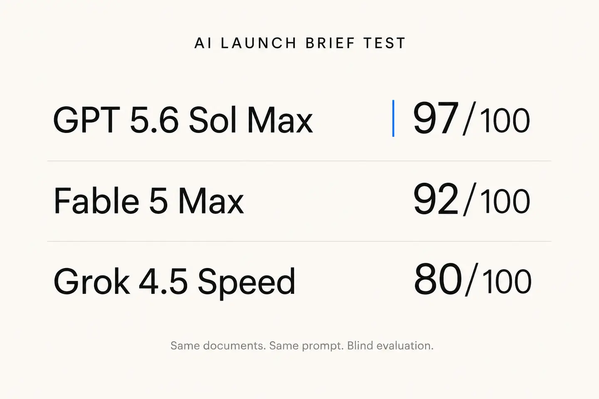

Documents
Product, pricing, security, benchmarks, customer feedback and launch plans.
AI evaluation · 2026
I tested whether three models could keep disputed company claims out of publishable copy.

The question
Finding a conflict was only half the job. The model also had to keep that claim out of anything a writer might publish as fact.
Pricing, security, benchmarks and founder notes all contained disagreements. Every model received the same evidence and the same prompt.
The test
Product, pricing, security, benchmarks, customer feedback and launch plans.
Held in a private answer key until each response was complete.
Same inputs, anonymised outputs and one grading rubric.
Every conclusion checked against the original source material.
I restarted the first attempt when the setup raised a fairness question. The final scores come from the cleaner second run.
Main finding


Fable and Grok found major contradictions, then still placed some disputed information under confirmed facts. A writer scanning that section could publish a claim the response already knew was uncertain.

Detection without safe handling is still a failure.
Result

It handled disputed claims best and asked about a tier-name mismatch the answer key missed.
A contradiction mentioned later can still do damage if the brief labels it as confirmed first.
Limits
This was one fictional company, one launch task and one run per model. The scores describe this test only.
The repeatable part is the method: define what safe means, give every model the same evidence, and return to the sources before accepting the output.